Racinet Enzo
Je m'appelle Enzo Dorian, et je suis actuellement en deuxième année de BUT Réseaux et Télécommunications à l'IUT de Clermont-Ferrand. Avant d'intégrer cette formation, j'ai étudié au lycée Étienne Bézout en Seine-et-Marne, où j'ai suivi une terminale générale avec des spécialités en Mathématiques et Numérique et Sciences Informatiques (NSI). J'ai choisi ces spécialités car j'ai toujours eu une certaine aisance dans ces matières.
Cette expérience a éveillé en moi une véritable passion pour l'informatique. Mes choix de spécialités ont renforcé mes compétences dans plusieurs domaines. En mathématiques, j'ai appris à résoudre des problèmes de manière plus rigoureuse, tandis qu'en NSI, j'ai découvert comment configurer un réseau local et approfondi mes connaissances en programmation. Ces compétences m'ont préparé à intégrer une formation en Réseaux et Télécommunications, un choix logique et cohérent avec mon parcours et mes aspirations professionnelles.
Mon objectif est de devenir spécialiste en cybersécurité. C'est d'ailleurs pour cette raison que j'ai choisi ce BUT, qui propose une spécialisation en cybersécurité dès la deuxième année et offre de nombreuses opportunités dans ce secteur en forte demande. La formation prépare notamment à des métiers tels que pentester, administrateur système ou technicien en cybersécurité. J'ai décroché une alternance pour septembre 2025.
2024 - 2025 : BUT Réseaux et Télécommunications, IUT de Clermont-Ferrand
2019 - 2023 : Baccalauréat général, Lycée Étienne Bézout, Seine-et-Marne Spécialités : Mathématiques, Numériques et Sciences Informatiques
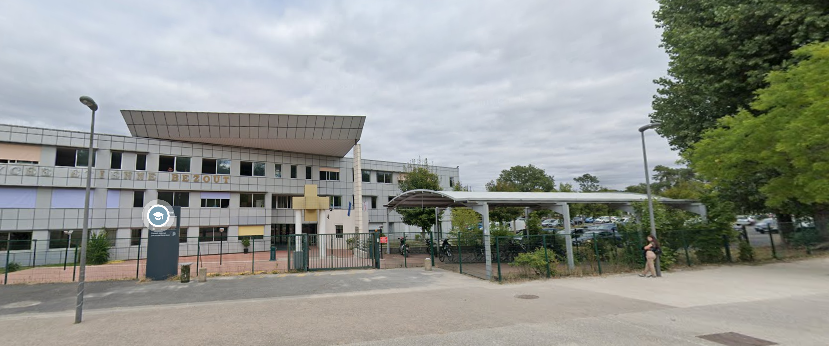
Les plus de la formation : travaux pratiques, faibles effectifs, débouchées
Grâce à l’aspect pratique de ma formation, j’ai développé davantage de rigueur, tant dans les manipulations que dans les calculs, afin d’obtenir des résultats précis et fiables. Il est particulièrement rassurant et motivant de constater les résultats concrets de ce que l’on a appris en théorie.
Par exemple, lors d’un travail pratique en télécommunications, j’ai eu l’opportunité de construire un circuit électrique en utilisant des résistances, des câbles et un générateur. J’ai ensuite mesuré la tension et l’ampérage à l’aide d’un multimètre pour vérifier la cohérence entre mes calculs théoriques et les valeurs réelles observées. Cette démarche m’a permis de confirmer la validité de mes calculs et de constater le bon fonctionnement du circuit, renforçant ainsi ma confiance dans mes compétences et ma méthode de travail, c’est pour cette raison que je reste dans cette formation.
La démarche adoptée pour construire un circuit, effectuer des mesures et comparer les résultats théoriques et pratiques témoigne d'une organisation structurée.
Par exemple, lors d’un travail pratique en télécommunications, j’ai eu l’opportunité de mettre en fonctionnement la TNT sur un mesureur de champ. Cette activité m’a permis d’apprendre à configurer les paramètres nécessaires, à analyser les signaux reçus, et à vérifier la qualité du signal en fonction des normes en vigueur. Cette expérience a consolidé mes compétences techniques et renforcé ma capacité à résoudre des problèmes de manière méthodique
Capacité à collaborer efficacement lors de projets et travaux en groupe, développée pendant mon parcours universitaire.
Par exemple, lors d'un travail pratique en réseaux, réalisé en binôme, j'ai eu l'opportunité d'installer et de configurer un point d'accès Wi-Fi. Cette expérience a renforcé mes compétences techniques tout en favorisant une communication claire et une répartition équilibrée des tâches avec mon coéquipier.
Je suis naturellement curieux, ce qui me donne envie de comprendre vraiment comment fonctionnent les technologies, surtout dans les réseaux et la cybersécurité. Cette curiosité me pousse à ne pas me contenter de ce qu’on apprend en cours : je cherche à découvrir de nouvelles méthodes, outils ou façons de faire. Par exemple, je me forme régulièrement sur des plateformes comme Pix, où je peux apprendre à mon rythme et valider mes compétences numériques. Cela m’aide à progresser et à rester à jour dans un domaine qui change tout le temps.
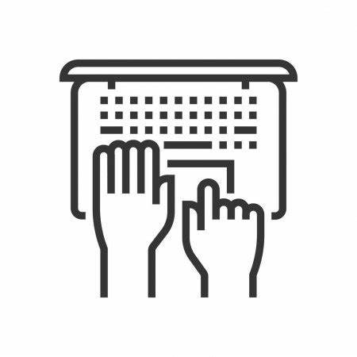
Objectif : l’objectif était de déconnecter un ordinateur de notre réseau en binôme.
Contexte : j'ai rencontré certaines difficultés car Je manquais de compréhension sur certains protocoles de communication, comme TCP/IP, ce qui rendait la gestion des connexions plus complexe. Mon collègue et moi avons exploré l’utilisation des commandes de déni de service (DoS) il s’agit d’un ensemble d’information qu’on envoi sur un PC pour le paralyser.
Travail réalisé : Cette tâche, s’est décomposée en 3 étapes : Premièrement connaitre l’adresse MAC destination de mon collègue il s’agit d’un identifiant unique, en deuxième lieu construire plusieurs paquets de donnée, puis d’envoyer les paquets en mode monitoring sur le PC de mon coéquipier.
Outils : À l’aide de l'utilisation d'outils d’analyse réseau comme Wireshark, Nmap et Scapy
Résultat : cela n’a pas fonctionnée. Cependant cette expérience m'a permis non seulement de renforcer mes compétences techniques, mais aussi de développer des qualités telles que la rigueur et la persévérance. En anticipant les problèmes et en optimisant la performance des réseaux, j'ai gagné en autonomie et en confiance, transformant ainsi mes faiblesses initiales en véritables points forts.
Objectif : l’objectif était de développer un jeu de Sudoku avec des fruits en guise de symboles individuellement.
Contexte : j’ai rencontré certaines difficultés car je manquais de maîtrise sur la gestion des structures de données, comme les tableaux multidimensionnels, ce qui rendait l’implémentation des règles de validation du jeu plus complexe.
Travail réalisé : J'ai découpé la tâche en plusieurs étapes : explorer des documentations HTML, concevoir la grille, et styliser le tout avec CSS.
Outils : CSS et HTML
Résultat : j’ai réussi à atteindre un résultat satisfaisant. Bien que certaines fonctionnalités aient nécessité des ajustements répétés, cette expérience m’a permis non seulement de renforcer mes compétences en programmation, mais aussi de développer des qualités telles que l’organisation et la créativité. En anticipant les défis liés à la conception d’une interface ludique et fonctionnelle, j’ai gagné en autonomie et en confiance, transformant ainsi mes lacunes initiales en véritables atouts pour des projets futurs.
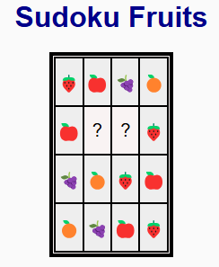
Objectif : L’objectif était de concevoir et mettre en place un circuit RLC (Résistance - Inductance - Capacité) dans le cadre d’une étude expérimentale en binôme, visant à analyser le comportement du signal dans un système électrique.
Contexte : Le projet s’inscrivait dans un module de télécommunications portant sur les circuits résonants. Nous avons rencontré des difficultés, notamment dans le calcul des paramètres théoriques (fréquence de résonance, impédance) et la mise en œuvre pratique du montage sur une plaque d’essai.
Travail réalisé : Le projet a été mené en plusieurs étapes :
Outils : Générateur de signaux, oscilloscope, composants RLC, plaque d’essai, multimètre, logiciel de simulation.
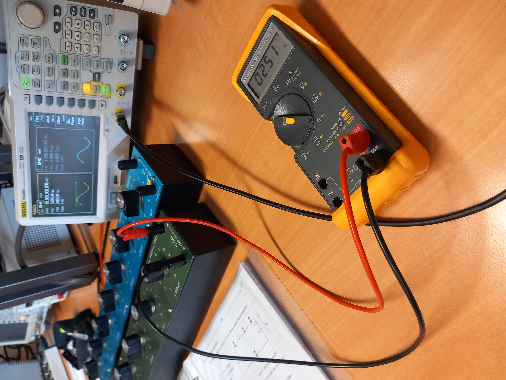
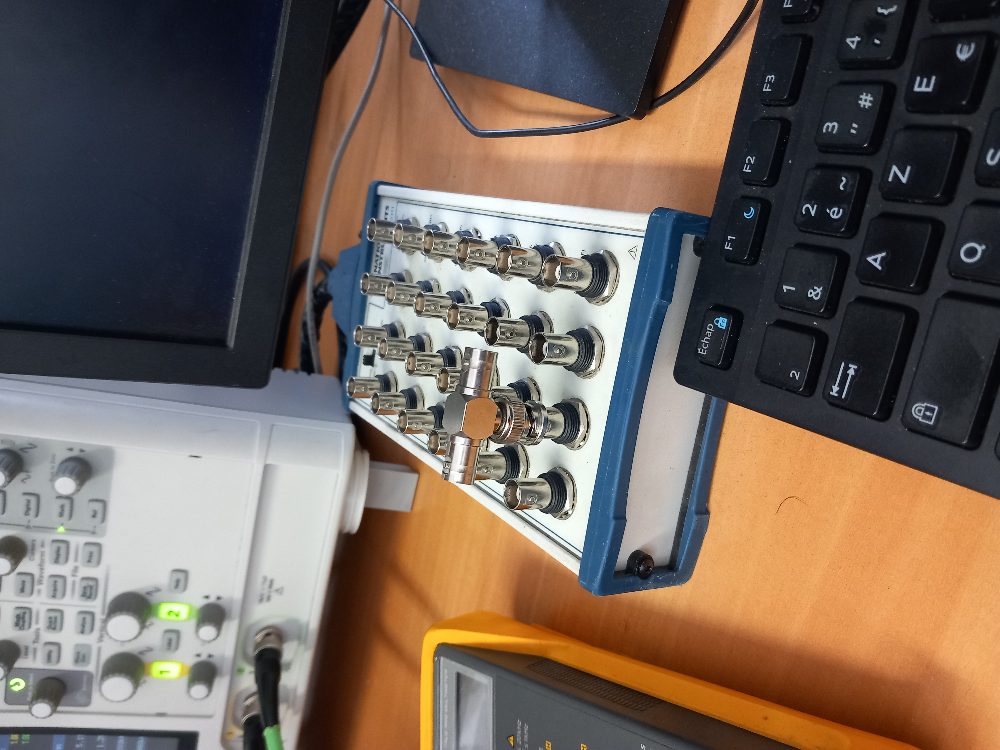
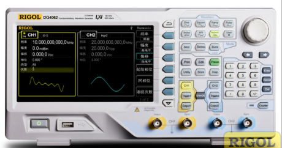
Résultat : Le circuit a été correctement monté et fonctionnait selon les prévisions. L’analyse du comportement du signal a mis en évidence la résonance attendue. Cette expérience m’a permis de mieux comprendre les phénomènes liés à la résonance et aux filtres passifs, tout en développant des compétences pratiques de manipulation de matériel électronique. Travailler en binôme a renforcé la collaboration et m’a appris à répartir efficacement les tâches tout en maintenant un bon niveau de communication technique.
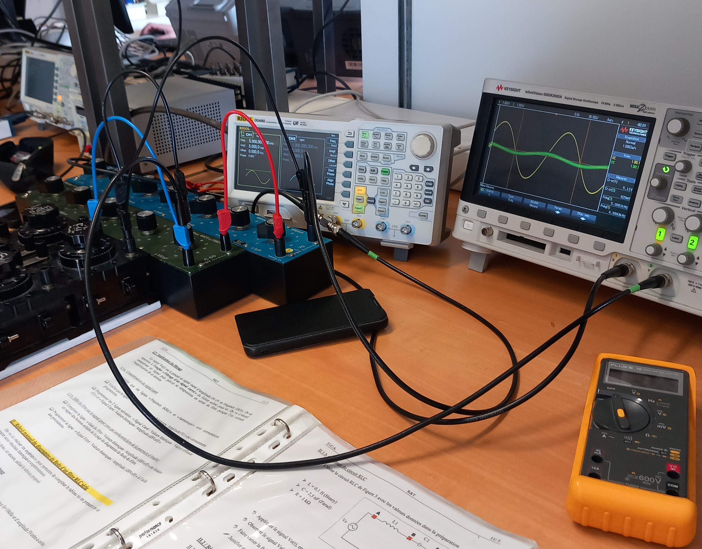
Objectif : Mettre en place une infrastructure de stockage et de services hautement disponible afin d’assurer la redondance et la continuité de service.
Contexte : Dans le cadre de mon alternance, l’entreprise utilisait une infrastructure nécessitant une gestion manuelle des sauvegardes et des transferts entre serveurs. L’objectif était d’étudier et d’améliorer la résilience du système.
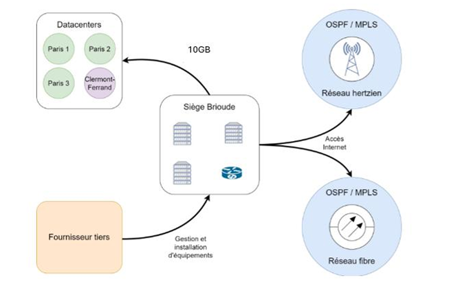
Travail réalisé : Mise en place et étude d’une infrastructure de haute disponibilité basée sur plusieurs mécanismes : configuration de RAID 1 et RAID 5 pour la redondance des données, mise en place d’un cluster de haute disponibilité (HA), et utilisation de Ceph RBD pour la gestion distribuée du stockage. L’environnement a été simulé sous VirtualBox afin de reproduire une architecture réaliste d’entreprise et tester les différents scénarios de panne et de reprise de service.
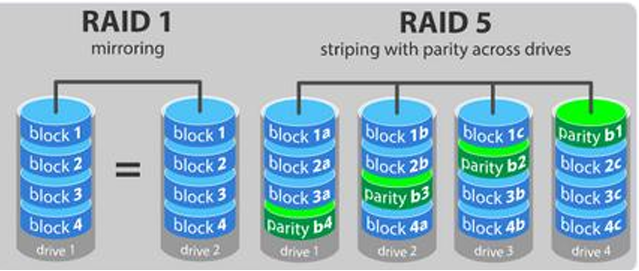
Outils : VirtualBox pour la virtualisation des machines, Wireshark pour l’analyse du trafic réseau, ainsi que les outils de configuration et de diagnostic du serveur de l’entreprise (serveur de stockage et infrastructure de type SAN/Ceph).
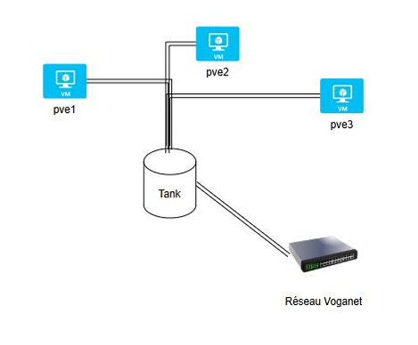
Résultat : L’environnement a permis de valider le fonctionnement de la redondance des données et de la haute disponibilité. Même si certaines configurations n’étaient pas totalement optimisées au départ, ce projet m’a permis de renforcer mes compétences en administration système et réseau, notamment sur les concepts de stockage distribué, de tolérance aux pannes et de virtualisation.
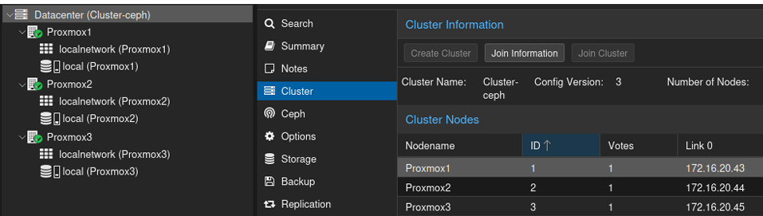
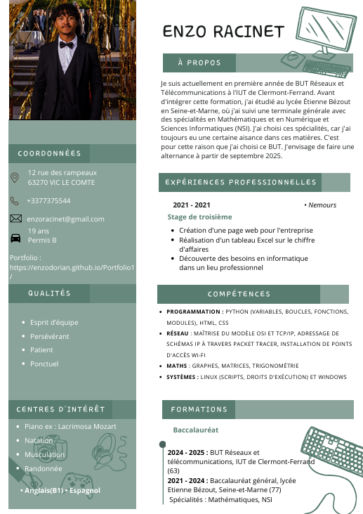
Vous pouvez me contacter via le formulaire ci-dessous :
Ou retrouvez-moi sur : LinkedIn | GitHub
Voici mes informations de contact ainsi que mon CV. N'hésitez pas à me contacter pour toute opportunité !